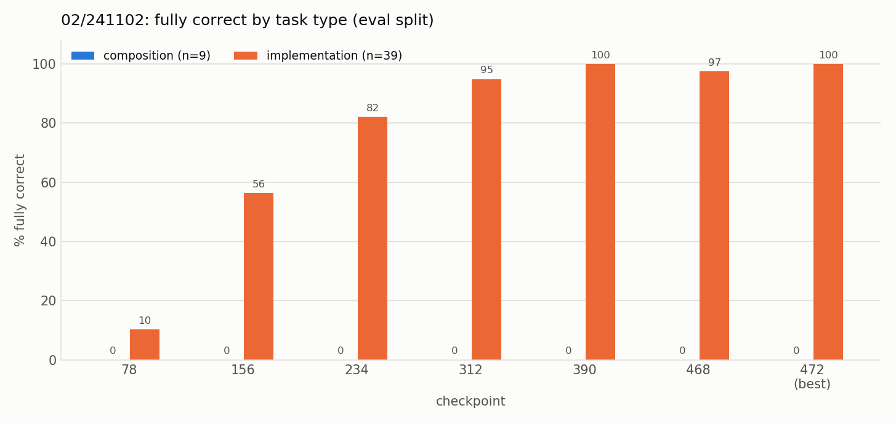
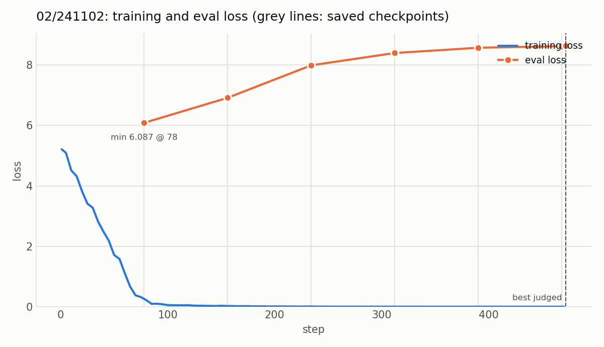

Experiment 02: One answer per topic, more question wordings
Tests with OPALX repo slice · field-solver / space-charge slice, 39 topics, judged by Claude Opus 5.5 against required and forbidden claims (README, source files)
1Summary
- Idea
- Give every question about a topic the same
mechanismanswer and add four new question wordings per topic, so the model maps many phrasings onto one answer. - Upshot
- 81% fully correct on eval, all 39 single-topic questions right, but 0 of 9 compositions: the adapter recognizes the topic and recites its paragraph.
2Setup
- Model
unsloth/Qwen3-8B-unsloth-bnb-4bit(Qwen3-8B, 4-bit), LoRA r = 32, α = 32, dropout 0, on all seven projections (q, k, v, o, gate, up, down); AdamW 8-bit, lr 1e-4 linear, 6 warmup steps, batch 8, weight decay 0.001, max sequence length 2048, seed 3407, loss on the answer tokens only- Configurations
- Alpaca format,
config.yamlas in 01: 8 epochs, 472 steps, checkpoint every 78 steps. A variant32B(Qwen3-32B in 8 bit, batch 4 × gradient accumulation 2) is defined but has not been run. - Training data
- The 8
recallandmechanismquestions of 01 per topic, now all paired with the topic'smechanismanswer, plus 4 new mechanism questions per topic (data/questions.py); scenarios dropped. 468 rows, 39 distinct answers, each seen 96 times (12 questions × 8 epochs), mean answer 74 words.
3Hypothesis
More question diversity per answer should remove the mistakes on eval questions that are worded differently from the training questions.
4Results
| checkpoint | fully correct | single-topic correct | mean claim coverage | composition coverage | material errors |
|---|---|---|---|---|---|
| 78 | 4/48 (8%) | 4/39 (10%) | 0.118 | 0.04 | 37/48 (77%) |
| 156 | 22/48 (46%) | 22/39 (56%) | 0.477 | 0.10 | 7/48 (15%) |
| 234 | 32/48 (67%) | 32/39 (82%) | 0.693 | 0.14 | 3/48 (6%) |
| 312 | 37/48 (77%) | 37/39 (95%) | 0.839 | 0.36 | 0/48 (0%) |
| 390 | 39/48 (81%) | 39/39 (100%) | 0.878 | 0.35 | 1/48 (2%) |
| 468 | 38/48 (79%) | 38/39 (97%) | 0.878 | 0.35 | 2/48 (4%) |
| 472 (best) | 39/48 (81%) | 39/39 (100%) | 0.885 | 0.39 | 0/48 (0%) |
| checkpoint | fully correct | mean claim coverage | material errors |
|---|---|---|---|
| 312 | 0/6 | 0.233 | 0% |

Single-topic questions reach 39/39 from checkpoint 390 on. The 9 composition questions stay at 0 at every checkpoint; their claim coverage reaches only 0.39.

Eval loss is on the same 48 questions and is shown for comparison only; checkpoints are chosen by the judge.
5Conclusion
02 is far better than 01 (81% vs 29% at 8 epochs). The eval set contains new wordings of 30 of the 39 recall questions, so the gain is not plain memorization of eval answers. A likely explanation: the model no longer has to choose between four differently worded answers per topic and can concentrate on recognizing the topic. That gives a model that recognizes a topic and recites its answer, which does not mean it understands the code, and it fails as soon as a question spans several topics.
Related: experiment 03 (which part of the change helps) · experiment 04 (training compositions directly) · experiment 05 (does it still read its input?) · experiment 02b (sampling instead of greedy decoding)